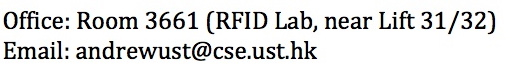

Department of Computer Science and Engineering The Hong Kong Univeristy of Science and Technology Clear Water Bay, Kowloon, Hong Kong   
 |
|
I
am working
with Prof. S.C.
Cheung. My
research interests generally include
software engineering, software analysis, and mobile computing.
Specifically, my
current work focuses on enhancing mobile applications'
qualities.
Research Projects
- Effective Model Checking for Context-Aware Mobile Applications (July 2011 - July 2012)
- Detecting Equivalent Symbolic State of Symbolic Analysis (March 2012 - present)
- Dynamic Analysis Framework for Smartphone Applications (May 2012 - present)
Publications
- Yepang Liu, and Chang Xu, "VeriDroid: Automating Android Application Verification," in Proceedings of the ACM/IFIP/USENIX International Middleware Conference (Doctoral Symposium), Beijing, China, Dec 2013, forthcoming.
- Chang Xu, Yepang Liu, S.C. Cheung, Chun Cao, and Jian Lu, "Towards
Context Consistency by Concurrent Checking for Internetware
Applications," Science China Information Sciences, Vol. 56, Iss. 8, Article 082105, 2013, pp. 1-20. [pdf]
- Yepang Liu, Chang Xu, and S.C. Cheung, "Where Has My Battery Gone? Finding Sensor Related Energy Black Holes in Smartphone Applications," in Proceedings of the 11th IEEE International Conference on Pervasive Computing and Communications (PERCOM 2013), San Diego, California, USA, Mar 2013, pp. 2-10. [acceptance rate: 11.2%] [Project website] [pdf] [talk slides]
- Yepang Liu, Chang Xu, and S.C. Cheung, "AFChecker:
Effective Model Checking for Context-Aware
Adaptive Applications," Journal
of
Systems and
Software (JSS), Vol. 86, 2013, pp. 854-867. [Download
paper] [Project website]
- Yepang Liu, Chang Xu, and S.C. Cheung, " Verifying
Android
Applications Using Java PathFinder," Technical
Report HKUST-CS12-03. Department of Computer Science and
Engineering, The Hong Kong University of Science and Technology, Sept.
2012.
Teaching Experience
- COMP 1022p Introduction to Computing with Java (Fall 2013)
- CSIT 5100 Object-Oriented Software Development of Enterprise Systems (Spring 2013)
- COMP 1022P Introduction to Computing with Java (Fall 2012)
-
CSIT
5100 Object-Oriented Software Development of Enterprise Systems (Spring
2012)
- COMP
1022P
Introduction to Computing with Java (Fall 2011)
- COMP 211 Introduction to Software Engineering (Spring 2011)
- COMP 102 Computer and Programming Fundamental I (Fall 2010)
Academic Services
- External reviewer of FASE 2012, FASE 2013.
- Student volunteer for DSN 2012, APSEC 2013.
Research Links
- AFChecker: An Effective Adaptation Fault Checker for Context-Aware Android Applications
- PhoneAdapter: A Rule-based Context-Aware Android Application
- Software Engineering Academic Genealogy (maintained by Prof. Tao Xie)
- Software Engineering Conferences and Journals (maintained by Prof. Tao Xie)
- Computer
Science Conferences and Journals Ranking (provided by ERC and ARC)
Other Links
- Words of wisdom (Sometimes you may feel worried or depressed during research, check out these words and learn from giants!)